5．逻辑派
关于数学基础的工作，我们已经讲到集合论的公理化提供了一个基础，它避开了已知的悖论，却仍可以作为现有数学的逻辑依据。我们曾指出，很多数学家对这种办法并不满意。大家都承认，实数系和集合论的无矛盾性是尚待证明的；相容性已不再是一件小事情了。选择公理的使用就有争论。除去这些问题，还有一个总的疑问，就是数学的妥善的基础究竟是什么。19世纪末的公理化运动中集合论的公理化，假定了数学所用的逻辑是没有问题的，是以此为根据来进行的。但是在20世纪初，就有了不再同意这个前提的几派思想。以弗雷格为首的一派，要重建逻辑，并把数学建立在逻辑上。这个计划，如已经指出的，由于矛盾的出现而受到挫折，但并未被放弃。事实上，罗素和怀特海曾独立地设想过，并且施行了这个计划。希尔伯特已感到需要确立相容性，开始阐述了他自己的有系统的数学基础。还有另一群数学家，称为直观主义者，不满意于19世纪在分析中所引进的概念和证明。这些人坚持这样一种哲学见解，不但与分析的方法论不能调和，而且对于逻辑的作用也提出疑问。这几种哲学的发展乃是数学基础中的主要事迹，其结果是揭开了关于数学本性的整个问题。这三个主要的思想派别的每一个，我们都要考察一下。
其中的第一个称为逻辑派（logistic school），其哲学称为逻辑主义。创立人是罗素和怀特海。他们与弗雷格独立无关地抱有这样的想法，即数学可以从逻辑推导出来，因而是逻辑的一种展延（extension）。其基本思想，罗素在他的《数学的原理》（1903）中作了概要的说明；而在怀特海和罗素的写得很详尽的著作《数学原理》（Principia Mathematica，3 vols．，1910—1913）中作了发挥。因为这部著作是权威性的论述，我们的说明将以此为本。
这个学派从逻辑本身的展开起始，由此导出数学，而不需要数学所特有的任何公理。逻辑的展开就在于提出一些逻辑的公理，由此推出定理，它们可以用于以后的推理。这样，逻辑的规律就由公理用形式的推导得出。和任何公理化的理论一样，《原理》中也有不定义的概念。因为若是不容许无限反复的定义，那就不可能把所有的词项都定义出来。在这些不定义的概念中有基本命题的概念，命题函数的概念，肯定一基本命题的真，一命题的否定，以及两个命题的析取。
罗素和怀特海解释了这些概念，虽然正如他们指出的，这种解释并不是逻辑展开的一部分。他们所谓的命题是指陈述一个事实或一个关系的语句。例如，约翰是人；苹果是红的等。一个命题函数则含有一个变量，把这个变量代换为一个值就给出一个命题。例如“X是一个整数”就是一个命题函数。一个命题的否定是指“这个命题成立不是真的”，因此，如果p表示约翰是人这个命题，则p的否定，记作（～p），就是指“约翰是人不真”，或“约翰不是人”。两个命题p和q的析取，记作p∨q，是指p或q。这里“或”的意思正如“男人或女人皆可申请”这句话中所说的。就是说，男人可以申请，女人可以申请，并且都可以申请。在“人必为男的或女的”这句话中，“或”具有更通常的意义，就是说非此即彼而不能两全。在数学中是按第一个意思来用“或”这个词的，虽然有时只有第二个意思是可能的。例如，“三角形为等腰的或四边形为平行四边形”说的是第一个意思。我们也说一个数必为正的或负的。而关于正数和负数的一些事实说明两者不能都是真的。因此，肯定p∨q就是指p并且q，～p并且q，以及p并且～q。
在命题之间最重要的一种关系是蕴涵（implication），即一个命题的真强制着另一个的真。在《原理》中，蕴涵
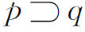
，定义为～p∨q，它的意思是指～p并且q，p并且q，或～p并且～q。作为说明，我们来看这个蕴涵：若X是人，则X有死。这里的情况可有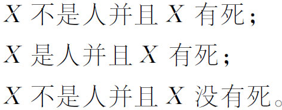
这些可能都是容许的。蕴涵所排除的乃是
在《原理》中有几个公设是：
（a）一个真的基本命题所蕴涵的命题是真的。
（b）
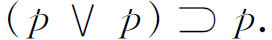
（c）
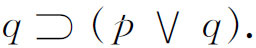
（d）
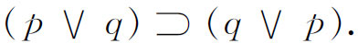
（e）
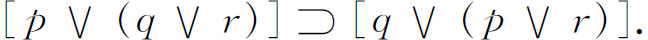
（f）由p的肯定和
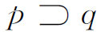
的肯定可得q的肯定。这些公设的独立性和无矛盾性是不能证明的，因为通常的方法不适用。作者们从这些公设出发推导出逻辑的定理，并且终于导出算术和分析。通常的亚里士多德的三段论法则则作为定理出现。
为说明逻辑本身已经形式化，并成为演绎的，我们来看一下《原理》开头的几个定理：
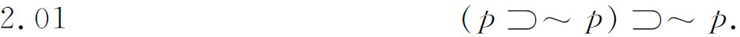
这就是“归谬”原理。用话来说，若p这个假设蕴涵着p是假的，则p就是假的。
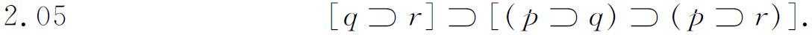
这是三段论的一种形式。用话来说，如果q蕴涵r，那么就有：若p蕴涵q，则p蕴涵r。
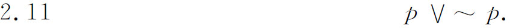
这就是排中律：p是真的或是假的。
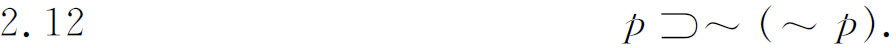
用话来说，p蕴涵着非p是假的。
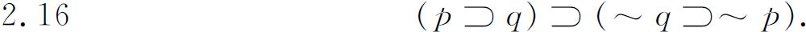
若p蕴涵q，则非q蕴涵非p。
命题是达到命题函数的一个步骤，命题函数是用性质来论述集合，而不用把集合中的东西指点出来。“x是红的”这个命题函数，就表示由所有红的东西所组成的集合。
如果一个集合的元素都是单个的东西，那么适用于这些元素的命题函数就说是层次（type）为0的。如果一个集合的元素本身就是命题函数，那么适用于这些元素的命题函数就说是层次为1的。一般地，变量的层次小于和等于n的命题函数，其层次为n＋1。
层次论是想要避免这样的悖论，它的产生是由于一堆东西包含着一个元素，而这个元素只能用这个堆来定义。罗素和怀特海对这个困难的解决是要求“任何牵涉着一个集合的所有元素的东西，都不能成为这个集合的元素。”为要在《原理》中贯彻这个制约，他们申明，一个（逻辑）函数不能用由这个函数本身定义的东西作为变元。他们接着讨论了悖论，并说明层次论把悖论避开了。
但是，层次论引到一类语句，它们需要细致地按层次加以区别。要想按照层次论来建立数学，开展起来将极为复杂。例如，在《原理》中，两个东西a和b是相等的，如果对每个性质P（x），P（a）和P（b）都是等价的命题（每一个蕴涵另一个）。按照层次论，P可以有不同的层次，因为它可以包含不同阶数的变元以及单个的东西a或b，因而相等的定义必须适用于P的所有层次；换句话说，相等的关系有无穷多个，对每一层次的性质都有一个。同样，由戴德金分割所定义的无理数，其层次分明比有理数要高，而有理数的层次又比自然数的高，因此连续统是由不同层次的数组成的。为了避免这种复杂性，罗素和怀特海引进了约化公理（axiom of reducibility），它对任何层次的一个命题函数都确认存在着一个等价的层次为0的命题函数。
在论述了命题函数以后，两位作者就讲到类的理论。粗略地讲，一个类（class）就是由满足某个命题函数的东西所组成的集合。而关系（relation）则表现为满足二元命题函数的偶（couple）所成的类。这样，“x审查y”就表示一个关系。作者是准备在这个基础上来引进基数的概念的。
基数（cardinal number）的定义是很有意思的。它的根据是先前引进过的类与类之间的一一对应关系。处在一一对应中的两个类，称为相似的。相似关系分明是自反的、对称的，并且是传递的。所有相似的类都具有一个共同的性质，这就是它们的数目。可是，相似的类可能具有多个共同的性质。罗素和怀特海在这一点上所做的，正如弗雷格做过的，是把一个类的数目定义为所有与它相似的类所组成的类。这样，3这个数目就是所有的三元类所组成的类，而三元类的记号是｛x，y，z｝，其中x≠y≠z。因为数目的定义事先假定了一一对应的概念，看起来这个定义似乎是循环的。但是作者指出，一个关系是一一的，如果当x和x′都对y有这个关系时，x与x′必是恒同的，而当x对y和y′都有这个关系时y与y′必是恒同的。因此，一一对应的概念并未牵涉到数目1。
有了基数或自然数以后，就能建立起实数系和复数系、函数，以及全部分析。几何可以通过数来引进。虽然《原理》在细节上有所不同，但我们对数系的和几何的基础的考察（第41和42章）都表明，这样的构造在逻辑上是可能的，不需要另外的公理。
这就是逻辑派的宏大计划。他们在逻辑上的工作有很多可说的，我们在这里只是一提而过。我们必须着重指出，他们在数学上的工作，就是要把数学奠基在逻辑上。不需要任何的数学公理；数学不过是逻辑的主题和规律的自然延展。但是逻辑的公设和它们所有的推论是任意的，而且还是形式的。就是说，它们是没有内容的；它们只有形式。结果，数学也就没有内容只有形式了。我们对数和几何概念所给予的物理意义并不属于数学。正是这种思想使罗素说道：数学是这样一门学科，在其中我们永远不会知道我们所讲的是什么，也不会知道我们所说的是不是真的。实际上，当罗素在这世纪初开始这个计划的时候，他（以及弗雷格）曾以为逻辑的公理都是真的。但在《数学的原理》1937年的版本中，他放弃了这个看法。
逻辑派的做法受到了很多批评。约化公理激起了反对，因为它太任意了。它曾经被说成是可喜的意外的，而不是逻辑所必需的。有人说，在数学中不能容许这个公理，只有用它才能证明的东西根本就不能认为是被证明了的。另外一些人说，这个公理是智力的廉价品。此外，罗素和怀特海的体系一直是未完成的，并且在很多细节上是不清楚的。后来有许多工作是去简化和澄清它。
对整个逻辑派的观点，还有一种严重的批评，就是假如逻辑派的看法是正确的，那么全部数学就是一门纯形式的、逻辑演绎的科学，它的定理可以从思维的规律得出；而思维规律的演绎的精致工作，怎么能够表现像声学、电磁学和力学这样广泛的自然现象，却没有解释。还有，在数学的创造中，必须由知觉的或想象的直观提供新概念，这是不是来自经验呢？不然的话，新的知识怎么会产生呢？但是，在《原理》中，所有的概念都化成为逻辑的了。
逻辑派设计的形式化，在任何真正的意义上都显然没有表现数学。它给我们显示外壳而不是内核。庞加莱曾讥讽地说过［见《科学的基础》（Foundations of Science），第483页］：“逻辑派的理论并非不毛之地；它生长矛盾。”若是承认了层次论，就不能这样讲了，但是这种层次论，正如已指出过的，是人为的。外尔也攻击过逻辑主义；他说，这个复杂的结构“对我们信仰力量的压制，不下于早期教会神父和中世纪经院哲学家的教条”。
尽管有这些批评，逻辑派的哲学还是被不少数学家承认了。这个罗素-怀特海构造在另一方面也做出了贡献，它以完全符号的形式实现了逻辑的彻底的公理化，从而大大地推进了数理逻辑这门学科。